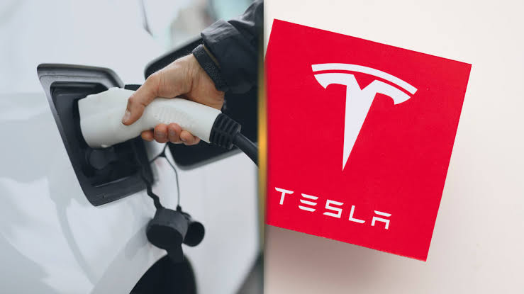

A nova placa de vídeo da Intel

A Intel GPU D270, de codinome Crescent Island, é uma aceleradora desenvolvida para inteligência
artificial,
com foco em alto desempenho e eficiência energética.
Com até 480 GB de memória LPDDR5X, largura de
banda de
1,5 TB/s e consumo de 350 W, promete executar modelos de IA de grande porte e atender a múltiplos
usuários
simultaneamente.
Seu objetivo é oferecer uma solução escalável para servidores, empresas e data
centers,
reduzindo os custos de operação e ampliando as possibilidades da inteligência artificial.
Meta e Apple se unem para levar nova inteligência artificial aos computadores Mac
A inteligência artificial continua evoluindo rapidamente e transformando o mundo da tecnologia, trazendo
novas possibilidades para computadores, celulares e outros dispositivos.
As ferramentas mais
recentes
prometem automatizar tarefas, auxiliar na programação, criar conteúdos e aumentar a produtividade dos
usuários.
Além disso, os avanços permitem que sistemas inteligentes realizem atividades cada vez
mais
complexas, tornando o uso da tecnologia mais prático e eficiente.
Essa evolução também abre portas
para
desenvolvedores e empresas criarem soluções inovadoras, mostrando que a inteligência artificial terá um
papel cada vez mais importante no futuro da tecnologia.
Tesla abandona o nome Full Self-Driving na Europa após críticas

A Tesla decidiu abandonar o nome Full Self-Driving para seu sistema de assistência à condução na Europa,
após questionamentos de reguladores sobre a possibilidade de o nome levar motoristas a acreditar que os
veículos são totalmente autônomos.
A tecnologia oferece recursos avançados de assistência, mas ainda
exige
atenção constante e supervisão do motorista.
A mudança destaca os desafios enfrentados pelas
montadoras para
desenvolver carros cada vez mais inteligentes sem comprometer a segurança nas estradas.
O caso
também
reforça a importância de regras claras para tecnologias de direção automatizada, que continuam evoluindo
e
ganhando espaço no setor automotivo.